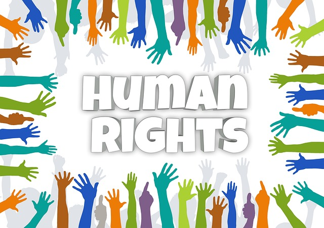
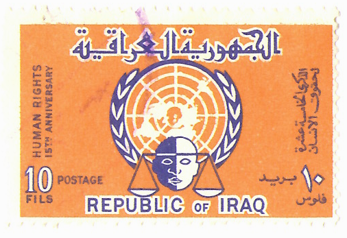

Understanding the past to protect the present: The story of human dignity, freedom, and the fight against slavery and injustice.
What Are Human Rights?
Human rights are the fundamental freedoms and protections that belong to every person simply because they are human.
They are universal, inalienable, and apply regardless of race, gender, religion, culture, or nationality.
These rights include the right to life, freedom from slavery and torture, freedom of opinion and expression, the right to work and education, and many more.
The idea that people possess inherent rights has existed for centuries, but it was only after the horrors of World War II that the modern system
of international human rights law began to take shape.
In 1948, the United Nations adopted the Universal Declaration of Human Rights (UDHR), which set out, for the first time,
fundamental human rights to be universally protected. It remains one of the most translated and widely recognized documents in the world,
consisting of 30 articles that cover civil, political, economic, social, and cultural rights.
Slavery in History
Slavery is one of the darkest chapters in human history. It has existed since ancient times, with enslaved people used in Egypt, Greece, and Rome for
building projects, domestic work, and military labor. During the Middle Ages, slavery and forced labor continued across Europe, Africa, and Asia.
The most infamous period of slavery, however, was the Transatlantic Slave Trade between the 16th and 19th centuries.
Millions of Africans were captured, sold, and transported in brutal conditions across the Atlantic Ocean to the Americas.
Families were torn apart, and countless people died during the voyages. Those who survived were forced to work on plantations producing sugar, cotton, and tobacco,
generating immense wealth for European empires while causing generations of suffering in Africa and the New World.


Abolition of Slavery
The movement to abolish slavery began to grow in the 18th century. Britain was one of the first major powers to ban the slave trade in 1807,
followed by the United States, which formally abolished slavery in 1865 through the 13th Amendment to the Constitution after the Civil War.
France abolished slavery in its colonies in 1848, and Brazil, the last country in the Americas to do so, ended slavery in 1888.
These victories were the result of long struggles by enslaved people who resisted oppression, abolitionist activists, and political leaders
who recognized the immorality of slavery. However, the legacy of slavery continues to affect societies today, particularly in issues of racial inequality and discrimination.
Facts & Numbers
1619
First recorded African slaves arrived in English colonies in America.
1807
British Parliament abolished the slave trade.
1865
Slavery abolished in the United States (13th Amendment).
1948
Universal Declaration of Human Rights adopted by the UN.
Human Rights Today
Despite the progress made in abolishing slavery and establishing international human rights law, challenges remain.
Modern slavery still exists in the form of human trafficking, forced labor, and child exploitation.
According to international organizations, over 40 million people worldwide are estimated to live in conditions of modern slavery.
Human rights defenders continue to fight for justice, equality, and freedom across the globe.
Ensuring access to education, protecting refugees, promoting gender equality, and fighting against racism and discrimination
are among the most urgent issues in the 21st century.